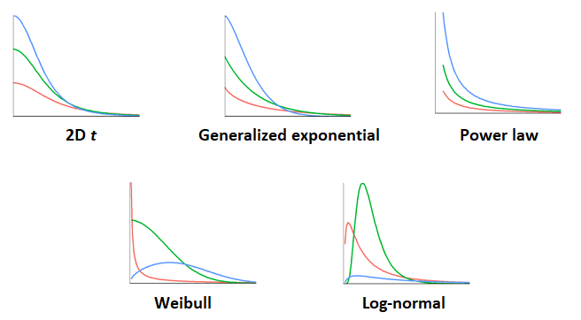
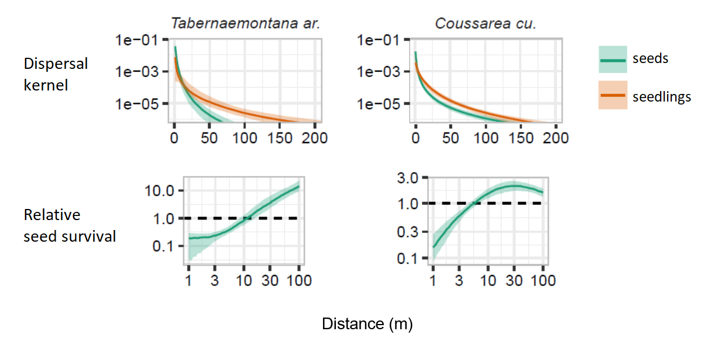

Hierarchical Bayesian models, part 2
Contents
Review: Model comparison and selection
Bayesian approach to model comparison
Comparing models with loo and brms
Model comparison and selection
Suppose we have different statistical models that aim to explain the same data. Models could include different predictors, different distributions of the response, etc. How to determine which model best represents the phenomenon studied?
Most model comparison methods seek to optimize the model’s ability to predict new observations of the phenomenon. In other words, it is not enough to assess whether the model approaches the data used to fit it. A more complex model, with more adjustable parameters, will always be closer to this data.
In general, an overly simple model has a large systematic error (bias or underfitting), because it omits significant effects on the response variable; an overly complex model has a large random error (variance or overfitting), because it tends to represent “accidental” associations of a particular sample that do not generalize to the population. The ideal compromise between these two types of error, which minimizes the total error, depends on the amount of data, since a large sample decreases the variance associated with the estimation of many parameters in a complex model.

With large data sets, it is possible to set aside part of the data (often ~20 to 30%) to create a validation set, while the rest of the data form the training set. In this case, each of the candidate models is fit on the training data and the predictive performance of the fitted models is evaluated on the validation set.
Cross-validation
Setting aside part of the data for validation is not practical if the sample size is small. With relatively little data, each point is important for accurately estimating the parameters of the model; also, the smaller the validation set, the more likely it is to be non-representative of the population.
Cross-validation provides a way to assess predictive performance on new observations without having to set aside a validation set. This method consists in randomly dividing the observations into groups and measuring the quality of the prediction of the observations of a group according to a model fitted to the rest of the observations.
For example, if each group has only one observation (leave-one-out cross-validation), we can evaluate the prediction of each value of the response \(y_i\) for a model fitted without observation \(i\). However, this method requires refitting the model \(n\) times, where \(n\) is the number of observations.
If the number of observations is large, it may be more practical to divide the observations into \(k\) groups (k-fold cross-validation), for example \(k\) = 10, and to fit each of the models to be compared \(k\) times, leaving a different \(1/k\) fraction of the observations aside each time.
Akaike information criterion
Since cross-validation methods are costly in terms of calculation, it is useful to be able to approximate the prediction error that would be obtained in cross-validation without having to refit the model several times.
For models fitted by the maximum likelihood method, the Akaike information criterion (AIC) offers a measure of fit based on information theory, which tends to produce the same result as leave-one-out cross-validation if the sample size is large enough. The AIC is calculated as follows:
\[ AIC = -2 \log L + 2 K \]
where \(L\) is the likelihood function at its maximum and \(K\) is the number of parameters estimated by the model. A small AIC value represents a better predictive power of the model. The first term in the equation represents the fit to the observed data, while the second term penalizes more complex models.
The AIC is defined to the nearest additive constant, so its absolute value gives no information. Rather, it is the difference of AIC between the candidate models which is interpretable. This difference is defined with respect to the minimum value of the AIC among the compared models: \(\Delta AIC = AIC - \min AIC\). The best model has a \(\Delta AIC = 0\).
The expression:
\[ e^{-\frac{\Delta AIC}{2} } \]
corresponds to the evidence ratio of each model vs. the one with the minimum AIC. For example, \(\Delta AIC = 2\) corresponds to a ratio of ~0.37 (~3 times less likely), while \(\Delta AIC = 10\) corresponds to a ratio of ~0.0067 (~150 times less likely).
Multi-model predictions
With \(m\) candidate models, we can use the evidence ratios described above to define the Akaike weight \(w\) for each model:
\[w_i = \frac{e^{\frac{-\Delta AIC_i}{2}}}{\sum_{j=1}^{m} e^{\frac{-\Delta AIC_j}{2}}}\]
The denominator normalizes each ratio by their sum, so that the sum of the weights \(w_i\) equals 1.
If several models are plausible and have a significant Akaike weight, then it is possible to average their predictions for a new observation of the response (this prediction is noted \(\tilde{y}\)), by weighting the prediction \(\tilde{y_j}\) of each candidate model by its weight \(w_j\).
\[\tilde{y} = \sum_{j = 1}^m w_j \tilde{y_j}\]
Multi-model predictions are often more accurate than those obtained by considering only the best model, because they take into account the uncertainty about the form of the model.
Bayesian approach for model comparison
Predictive density
For a model estimated by maximum likelihood, the predictions of new observations are obtained by fixing the parameters of the model at their estimated value. The likelihood of this new observation is therefore \(p(\tilde {y} | \hat{\ theta})\), where \(\hat{\theta}\) are the maximum likelihood parameter estimates.
In a Bayesian approach, the predictions of new observations are obtained by averaging the predictions over the posterior distribution of the parameters. The predictive density of \(\tilde{y}\) conditional on the model fitted to observations \(y\), denoted \(p(\tilde{y} | y)\), is equal to the mean of the likelihood \(p(\tilde{y} | \theta)\) for the joint posterior distribution of \(\theta\):
\(p(\tilde{y} | y) = \int p(\tilde{y} | \theta) p(\theta | y) \text{d}\theta\) .
In practice, if a Monte-Carlo method generates \(S\) parameter vectors \(\theta_{(1)}, ..., \theta_{(S)}\) that approximate the joint posterior distribution, we calculate \(p(\tilde{y} | y)\) by averaging the predictions of each vector:
\(p(\tilde{y} | y) = \frac{1}{S} \sum_{j = 1}^S p(\tilde{y} | \theta_{(j)})\) .
As with likelihood, it is easier to work with the logarithm of the predictive density.
Cross-validation
To determine the model that maximizes the predictive density of new observations, as defined above, we can use cross-validation. However, since fitting hierarchical Bayesian models sometimes requires considerable computing time, it is not practical in these cases to repeat the estimation of the model a large number of times, leaving aside some of the data. We therefore most often use criteria which approximate the predictive performance of a cross-validation.
If the AIC approximates the cross-validation error for the models fit by maximum likelihood with a fairly large number of observations, this criterion does not apply well to Bayesian models. On the one hand, the parameter values maximizing the likelihood are not directly found when fitting Bayesian models. In addition, it is difficult to define a number of parameters \(K\) because of the hierarchical structure and the constraints imposed by the prior distributions of the parameters, which result in those parameters not being completely “free”.
Selection criteria for hierarchical Bayesian models
DIC
The Deviance Information Criterion (DIC), based on AIC, was one of the first criteria developed for the comparison of Bayesian models:
\[DIC = -2 \log p(y | \bar{\theta}) + 2 p_D\]
where \(\bar{\theta}\) is the mean of the posterior distribution of \(\theta\) and \(p_D\) is the effective number of parameters, which can be calculated in several ways.
Like the AIC, the DIC represents well the relative predictive performance of models on new data, if the sample size is large enough. However, this is not a Bayesian prediction because it is based on a single estimate of each parameter (its mean value) rather than on the entire posterior distribution.
WAIC
The Watanabe-Akaike information criterion (WAIC) is similar to the DIC, but the first term is based on the joint predictive density of the observations \(y_1, ..., y_n\).
\[WAIC = -2 \sum_{i=1}^n \log \left( \frac{1}{S} \sum_{j = 1}^S p(y_i | \theta_{(j)}) \right) + 2 p_W\] ,
where the penalty \(p_W\) is the sum of variances of the log predictive density at each point:
\[p_W = \sum_{i=1}^n \text{Var}_j \left(\log p(y_i | \theta_{(j)}) \right)\]
Here, Var\(_j\) denotes the variance of the expression in parentheses over the set of iterations \(j\).
The WAIC of a brms model can be calculated with the waic function.
PSIS-LOO
A method recently developed by Vehtari et al. (2017) consists in estimating the predictive density at each point which would be obtained by leave-one-out cross-validation, that is to say by predicting \(y_i\) from the model fitted to the data excluding \(i\), \(y_{-i}\).
\(p(y_i | y_{-i}) = \int p(y_i | \theta) p(\theta | y_{-i}) \text{d}\theta\) .
The PSIS-LOO method (PSIS = Patero smoothed importance sampling, LOO = leave-one-out) aims to estimate this quantity without performing cross-validation. Summarily, this approximation is obtained by averaging the \(p(y | \theta_{(j)})\), but with a special weighting of the \(\theta_{(j)}\) (importance sampling). This weighting is then adjusted so that the extreme weights follow a theoretical model (Pareto distribution).
This method is implemented in the R package loo and can be called from the loo function applied to the result of a model in brms.
As we will see in the example below, the PSIS-LOO method produces its own diagnosis. The choice of the weights for each value \(y_i\) is based on a parameter of the Pareto distribution \(k\) and when \(k > 0.7\), the approximation of \(p(y_i | y_{- i})\) is potentially unstable. If this problem occurs for some observations, it is possible to refit the model by excluding these observations only in order to directly calculate \(p(y_i | y_{-i})\).
The result of this method is the estimated logarithm of the predictive density \(elpd_{loo}\), in other words the sum of \(\log p(y_i | y_{- i})\). An information criterion (LOOIC) similar to DIC and WAIC can be obtained by multiplying \(elpd_{loo}\) by -2.
Comparison of methods
The PSIS-LOO method is a little more precise than the WAIC, especially for small samples, but the WAIC is generally faster to calculate.
Since they are based on Bayesian predictive density rather than on a single mean estimate of each parameter, these two methods (WAIC and PSIS-LOO) are currently preferred over DIC. However, both assume that the individual observations \(y_i\) are independent of each other, conditional on the value of the parameters. Typically, this assumption is not respected if the model directly includes a correlation between different values of the response (e.g. temporal or spatial correlation).
Multi-model predictions
In the previous section, we saw that a multi-model prediction for a new observation \(\tilde{y}\) is calculated by the weighted average of the predictions of the different models.
\[\tilde{y} = \sum_{j = 1}^m w_j \tilde{y_j}\]
As for the AIC, we can define weights according to the differences in IC between two models and this for different Bayesian criteria (e.g. WAIC, LOOIC).
However, it is not always optimal to combine the models in proportion to the evidence ratios. For example, the two best models can produce redundant predictions, while the third and fourth best models can help correct some of the worse models’ poor predictions.
Model stacking consists in searching for the weights \(w_j\) which minimize the multi-model prediction error given by the weighted average (Yao et al. 2018). This calculation can be done directly from the results of the PSIS-LOO method, as we will see in the example in the next section.
Comparison of models with loo and brms
The rikz.csv dataset contains data on the richness of the benthic microfauna (Richness) for 45 sites spread over 5 beaches (Beach) in the Netherlands, depending on the vertical position of the site (NAP) and an exposure index measured at the beach level (Exposure).
rikz <- read.csv("../donnees/rikz.csv")
rikz$Exposure <- as.factor(rikz$Exposure)
head(rikz)## Sample Richness Exposure NAP Beach
## 1 1 11 10 0.045 1
## 2 2 10 10 -1.036 1
## 3 3 13 10 -1.336 1
## 4 4 11 10 0.616 1
## 5 5 10 10 -0.684 1
## 6 6 8 8 1.190 2Last week, we fit with brms a Poisson regression model for specific richness as a function of NAP and Exposure, with a random effect of the Beach on the intercept.
library(brms)
rikz_prior <- c(set_prior("normal(0, 1)", class = "b"),
set_prior("normal(2, 1)", class = "Intercept"),
set_prior("normal(0, 0.5)", class = "sd"))
mod1 <- brm(Richness ~ NAP + Exposure + (1 | Beach), data = rikz,
family = poisson, prior = rikz_prior,
control = list(adapt_delta = 0.99))We now consider a different version of the model where the effect of NAP also varies randomly between beaches.
mod2 <- brm(Richness ~ NAP + Exposure + (1 + NAP | Beach), data = rikz,
family = poisson, prior = rikz_prior,
control = list(adapt_delta = 0.99))Here are the fixed effects and the standard deviation of the random effects estimated for the two models. In model 2, the uncertainty on b_NAP has increased and the random effect of the range on this coefficient has a standard deviation of 0.34 with a credibility interval of 0.06 to 0.70, comparable to the random effect of the beach on the intercept.
posterior_summary(mod1, pars = "b|sd")## Estimate Est.Error Q2.5 Q97.5
## b_Intercept 2.3768063 0.29928962 1.65052195 2.9026726
## b_NAP -0.5022979 0.07147339 -0.64245708 -0.3635854
## b_Exposure10 -0.4591405 0.32879974 -1.04058741 0.2932071
## b_Exposure11 -1.1593086 0.34394732 -1.76553502 -0.3930065
## sd_Beach__Intercept 0.2474170 0.13614456 0.02605894 0.5622590posterior_summary(mod2, pars = "b|sd")## Estimate Est.Error Q2.5 Q97.5
## b_Intercept 2.3730140 0.3342694 1.59135757 2.9490364
## b_NAP -0.5770183 0.1542767 -0.89430239 -0.2779925
## b_Exposure10 -0.3921654 0.3734278 -1.07957393 0.3969519
## b_Exposure11 -1.1529676 0.3797490 -1.81743688 -0.2800094
## sd_Beach__Intercept 0.3036332 0.1558014 0.03965657 0.6790722
## sd_Beach__NAP 0.3494459 0.1563327 0.07779468 0.7054053LOOIC computation
The loo function in brms compares different models according to the PSIS-LOO criterion.
loo1 <- loo(mod1, mod2, compare = TRUE)## Warning: Found 1 observations with a pareto_k > 0.7 in model 'mod1'. It is
## recommended to set 'moment_match = TRUE' in order to perform moment matching for
## problematic observations.## Warning: Found 3 observations with a pareto_k > 0.7 in model 'mod2'. It is
## recommended to set 'moment_match = TRUE' in order to perform moment matching for
## problematic observations.loo1## Output of model 'mod1':
##
## Computed from 4000 by 45 log-likelihood matrix
##
## Estimate SE
## elpd_loo -105.6 9.5
## p_loo 10.2 3.5
## looic 211.1 19.0
## ------
## Monte Carlo SE of elpd_loo is NA.
##
## Pareto k diagnostic values:
## Count Pct. Min. n_eff
## (-Inf, 0.5] (good) 42 93.3% 917
## (0.5, 0.7] (ok) 2 4.4% 127
## (0.7, 1] (bad) 1 2.2% 157
## (1, Inf) (very bad) 0 0.0% <NA>
## See help('pareto-k-diagnostic') for details.
##
## Output of model 'mod2':
##
## Computed from 4000 by 45 log-likelihood matrix
##
## Estimate SE
## elpd_loo -101.9 7.2
## p_loo 13.5 3.7
## looic 203.9 14.5
## ------
## Monte Carlo SE of elpd_loo is NA.
##
## Pareto k diagnostic values:
## Count Pct. Min. n_eff
## (-Inf, 0.5] (good) 33 73.3% 796
## (0.5, 0.7] (ok) 9 20.0% 255
## (0.7, 1] (bad) 3 6.7% 37
## (1, Inf) (very bad) 0 0.0% <NA>
## See help('pareto-k-diagnostic') for details.
##
## Model comparisons:
## elpd_diff se_diff
## mod2 0.0 0.0
## mod1 -3.6 3.4The result indicates that model 1 has a smaller log predictive density compared to model 2 (difference of 3.6), but the standard error of this difference (column 2) is 3.4. So we cannot be certain that model 2 is the best.
In addition, R warns us that for 4 observations (1 of model 1, 3 of model 2), the PSIS-LOO estimate is unstable with a $ k> 0.7 $ in the Pareto distribution. This warning means that for these observations, the weights used for the approximation of the predictive density of cross validation have too many extreme values to estimate their variance. As suggested by the message, we re-evaluate the LOOIC with the argument reloo = TRUE, which will refit the model by omitting each of the problematic observations, to calculate the predictive density of cross validation directly.
loo_corr <- loo(mod1, mod2, compare = TRUE, reloo = TRUE)## 1 problematic observation(s) found.
## The model will be refit 1 times.##
## Fitting model 1 out of 1 (leaving out observation 10)## Start sampling## 3 problematic observation(s) found.
## The model will be refit 3 times.##
## Fitting model 1 out of 3 (leaving out observation 10)##
## Fitting model 2 out of 3 (leaving out observation 22)##
## Fitting model 3 out of 3 (leaving out observation 38)## Start sampling
## Start sampling
## Start samplingloo_corr## Output of model 'mod1':
##
## Computed from 4000 by 45 log-likelihood matrix
##
## Estimate SE
## elpd_loo -105.8 9.5
## p_loo 10.5 3.6
## looic 211.6 19.1
## ------
## Monte Carlo SE of elpd_loo is 0.1.
##
## Pareto k diagnostic values:
## Count Pct. Min. n_eff
## (-Inf, 0.5] (good) 43 95.6% 157
## (0.5, 0.7] (ok) 2 4.4% 127
## (0.7, 1] (bad) 0 0.0% <NA>
## (1, Inf) (very bad) 0 0.0% <NA>
##
## All Pareto k estimates are ok (k < 0.7).
## See help('pareto-k-diagnostic') for details.
##
## Output of model 'mod2':
##
## Computed from 4000 by 45 log-likelihood matrix
##
## Estimate SE
## elpd_loo -103.1 7.7
## p_loo 14.7 4.3
## looic 206.3 15.5
## ------
## Monte Carlo SE of elpd_loo is 0.3.
##
## Pareto k diagnostic values:
## Count Pct. Min. n_eff
## (-Inf, 0.5] (good) 36 80.0% 37
## (0.5, 0.7] (ok) 9 20.0% 255
## (0.7, 1] (bad) 0 0.0% <NA>
## (1, Inf) (very bad) 0 0.0% <NA>
##
## All Pareto k estimates are ok (k < 0.7).
## See help('pareto-k-diagnostic') for details.
##
## Model comparisons:
## elpd_diff se_diff
## mod2 0.0 0.0
## mod1 -2.7 3.0Here, the LOOIC value changed lightly compared with the previous case. As a comparison, WAIC produces a larger difference between the two models.
waic(mod1, mod2, compare = TRUE)## Warning:
## 6 (13.3%) p_waic estimates greater than 0.4. We recommend trying loo instead.## Warning:
## 9 (20.0%) p_waic estimates greater than 0.4. We recommend trying loo instead.## Output of model 'mod1':
##
## Computed from 4000 by 45 log-likelihood matrix
##
## Estimate SE
## elpd_waic -105.2 9.5
## p_waic 9.9 3.6
## waic 210.5 19.0
##
## 6 (13.3%) p_waic estimates greater than 0.4. We recommend trying loo instead.
##
## Output of model 'mod2':
##
## Computed from 4000 by 45 log-likelihood matrix
##
## Estimate SE
## elpd_waic -100.5 6.9
## p_waic 12.0 3.3
## waic 201.0 13.9
##
## 9 (20.0%) p_waic estimates greater than 0.4. We recommend trying loo instead.
##
## Model comparisons:
## elpd_diff se_diff
## mod2 0.0 0.0
## mod1 -4.7 3.6Comparison with GLMM
When we fitted these models with GLMMs in course 5, the AIC was lower for model 1, with a random effect on the intercept only. Why does the Bayesian method give a different result?
First, the use of prior distributions constrains the values of the parameters so that a more complex model shows less overfitting.
Then, the AIC and the Bayesian criteria are based on different predictions. Suppose that two models differ by the inclusion or omission of a parameter \(\theta\). The AIC compares the predictions when this parameter is omitted, which implies for example \(\theta = 0\), with the predictions at the estimated maximum likelihood value $ $. In contrast, the Bayesian predictions of the model including \(\theta\) are an average on the posterior distribution of \(\theta\), which will include values close to 0 if the posterior probability of that case is not negligible.
For these two reasons, the maximum likelihood and Bayesian approach predictions differ except in very specific cases, e.g. a linear model where the prior distribution is of little importance and the posterior distribution for all parameters is symmetrical.
Model stacking
The result of loo contains an element for each of the compared models. Each of these elements contains a pointwise matrix which presents among other statistics the estimated value of the log predictive density \(\log p(y_i | y_{- i})\) for each point \(i\) (elpd_loo) and the standard error of this estimate (mcse_elpd_loo).
head (loo1$loos$mod1$pointwise)## elpd_loo mcse_elpd_loo p_loo looic influence_pareto_k
## [1,] -3.035422 0.010108673 0.21491808 6.070843 0.2736016
## [2,] -2.631103 0.009949967 0.17020507 5.262206 0.3098142
## [3,] -2.552925 0.008736143 0.12135383 5.105851 0.2586973
## [4,] -4.569708 0.021133985 0.65050744 9.139416 0.3687250
## [5,] -2.204221 0.003305800 0.02572645 4.408443 0.3002091
## [6,] -2.226006 0.005473939 0.06371198 4.452012 0.2461702If we wanted to combine the predictions of these two models, the stacking_weights function of the loo package allows us to determine the weights for the optimal superposition of the two models. This function requires a matrix with one column per model, corresponding to the elpd_loo column of thepointwise matrix mentioned above.
library(loo)
stacking_weights(cbind(loo1$loos$mod1$pointwise[,1], loo1$loos$mod2$pointwise[,1]))## Method: stacking
## ------
## weight
## model1 0.037
## model2 0.963stacking_weights(cbind(loo_corr$loos$mod1$pointwise[,1], loo_corr$loos$mod2$pointwise[,1]))## Method: stacking
## ------
## weight
## model1 0.127
## model2 0.873For the PSIS-LOO estimate with correction of problematic values, we see that a much greater weight is given to model 2. As mentioned above, since the predictions are based on the whole posterior distribution of sd_Beach__NAP, this includes cases where the standard deviation of this random effect approaches 0 and we therefore approach model 1.
Application: predator-prey model
Rosenbaum et al. (2019) model the population dynamics of a predator-prey-resource system in a controlled environment (chemostat). The predator is a rotifer species (microscopic animal) and the prey is a unicellular alga whose growth depends on the nitrogen concentration (limiting resource).
Theoretical model
The authors assume that the nitrogen concentration \(S\), algae density \(A\) and rotifer density \(R\) vary over time according to the following equations:
\[\frac{dS}{dt} = \delta S^* - \frac{1}{c_A} \frac{f_A S}{h_A + S} A - \delta S\]
This equation indicates that the rate of change in nitrogen concentration depends on (1) nitrogen influx \(\delta S^*\) (\(\delta\) is the chemostat flow rate and \(S^*\) is the concentration in the incoming solution); (2) nitrogen consumption by the algae (\(c_A\) is the conversion factor, \(f_A\) is the maximum growth rate and \(h_A\) is the half-saturation point) and (3) the output flow \(\delta S\).
\[\frac{dA}{dt} = \frac{f_A S}{h_A + S} A - \frac{1}{c_R} \frac{f_R A}{h_R + A} R - \delta A\]
This equation indicates that the rate of change in algae density depends on (1) nitrogen consumption by the algae, (2) algae consumption by the rotifers (conversion factor \(c_R\), maximum growth rate \(f_R\) and half-saturation point \(h_R\)) and (3) output flow \(\delta A\).
\[\frac{dR}{dt} = \frac{f_R A}{h_R + A} R - \delta R\]
Finally, the rate of change in rotifer density depends on their algae consumption and output flow.
Data and statistical model
The authors measured the daily concentration of algae and rotifers for about 20 days in 18 replicates of this experiment. In some replicates, the time series showed stable concentrations, while others showed cyclic dynamics.
For this experiment, the parameters \(\delta\), \(S^*\), \(h_A\) and \(h_R\) are known, whereas the maximum growth rates of the two organisms (\(f_A\) and \(f_R\)) and the conversion factors (\(c_A\) and \(c_R\)) must be estimated from the data. The following is a summary of the Stan model implementing this model:
The logarithms of the parameters \(f_A\), \(f_R\), \(c_A\) and \(c_R\) vary randomly between the replicates, according to a normal distribution where the mean and standard deviation are parameters to be estimated.
The concentrations of each element of the system at the beginning of the experiment (\(S_0\), \(A_0\), and \(R_0\)) are parameters to be estimated.
For a given value of the parameters, the above series of three equations is solved numerically to obtain the time series of \(S\), \(A\) and \(R\). (Stan allows solving systems of differential equations in a model.)
The observations of \(A\) and \(R\) follow a log-normal distribution around their true value, with a standard deviation to be estimated.
For all parameters to be estimated, the authors assigned prior distributions with weak constraints (weakly informative prior) based on past experiences with this type of system.
Simulations
The authors carried out simulations from the full model, with parameters drawn from their prior distribution, in order to ensure that the model fitted to the results of these simulations is capable of recovering the true values of the parameters \(f_A\), \(f_R\), \(c_A\) and \(c_R\) (in other words, that the parameters are identifiable).
Figure 1 of this study, reproduced below, shows the posterior distribution of the estimation error of the parameters for different simulations. This test allowed the authors to determine that when the populations of the two species are stable rather than cyclical (top green results), three of the four parameters are difficult to estimate precisely.
 Source: Rosenbaum et al. 2019, Fig.1
Source: Rosenbaum et al. 2019, Fig.1
Fitting the model
From the model fitted to the observations, the authors produced hindcast estimates of the \(S\), \(A\), and \(R\) concentrations on each day for each of the replicates (Figure 3, reproduced below, with the points corresponding to the observed values of \(A\) and \(R\)). Since the nitrogen concentration \(S\) (top row in blue) was not measured, the accuracy of its estimation depends on the accuracy of the model parameters, and is therefore less accurate when populations are stable rather than cyclic (top row).
 Source: Rosenbaum et al. 2019, Fig.3.
Source: Rosenbaum et al. 2019, Fig.3.
By comparing the dynamics estimated by the model to the observation points, we can see that the model follows more precisely the observations of the algae concentrations (middle in green) than those of the rotifers (bottom in red). One of the possible reasons given by the authors to explain these results is that the growth of the algal population depends on the unmeasured nitrogen concentration, so the model has the flexibility to adjust this concentration to reproduce the algal dynamics, which is not the case for rotifers whose growth depends on the algal population.
Application: seed and seedling dispersal
This example presents a study I conducted with collaborators to estimate seed and seedling dispersal curves as a function of distance for different species in the forest of Barro Colorado Island in Panama (Marchand et al. 2020).
Model and data
The study site is a 50 ha (1 km x 0.5 km) plot of the Smithsonian Tropical Research Institute (STRI) where all trees with a DBH >1 cm have been mapped and measured every 5 years since 1985. STRI researchers have been conducting annual seed collection and seed identification in 500 mesh traps scattered throughout this plot, as well as counting new seedlings in plots around these traps.
Seed dispersal is modelled separately for each of the main tree species. The number of seeds found in trap \(j\) during year \(t\) follows a negative binomial distribution with a mean \(\mu_{jt}\) given by the following equation:
\[\mu_{jt} = a \sum_i Q(b_{it}) F(r_{ij})\]
For each tree \(i\) of that species, the seed production \(Q\) is multiplied by the dispersal kernel \(F\), which gives the probability that a seed will fall within an area of one square meter located at a distance \(r_{ij}\). We then sum up the contributions of all the trees and multiply by the trap area \(a\).
The seed production of a tree is assumed to be proportional to its basal area \(b\).
\[Q(b_{it}) = e^{\beta_t} b_{it}\]
The logarithm of the proportionality constant, \(\beta_t\), varies from year to year according to a normal distribution with two parameters to be estimated.
\[\beta_t \sim \text{N}(\mu_{\beta}, \sigma_{\beta})\]
The same model can be used to estimate the dispersal of seedlings in relation to potential parents.
Our main objective was to determine the shape of the dispersal kernel \(F\) for seeds and seedlings of different species, as well as the relative germination success (ratio between the number of seedlings and the number of seeds) as a function of the distance from the parent.
The figure below shows the different dispersal kernels we considered. Each one contains two parameters to be fit from the data.

The problem of estimating dispersal kernels poses two challenges for which the Bayesian approach offers interesting solutions:
Seed dispersal follows a leptokurtic pattern, i.e. most seeds fall close to the parent, but a small proportion can reach extreme distances (several kilometers) under the action of wind and animals. However, our data do not allow us to observe dispersal over long or very short distances. In this situation, an unconstrained fit to the data may lead to an unrealistic dispersal function (e.g. median dispersal distance < 10 cm and mean > 10 km).
It is likely that none of the dispersal kernels presented above is entirely appropriate. In this case, we would like to estimate dispersal characteristics (mean dispersal distance of seeds and seedlings, relative seed survival as a function of distance) taking into account the uncertainty on the shape of the dispersal kernel.
To solve the second problem, we estimated the parameters of each of the five dispersal kernels for each species and used model stacking to obtain multi-model predictions of the dispersal characteristics of interest. Before the model stacking step, we used posterior predictive checks to eliminate models that were very poorly fitted to the data: for example, those that did not give plausible values for the total number of seeds observed in the traps, or for the number of zeros observed.
To solve the first problem, we chose prior distributions for the parameters of each dispersal kernel, so that the plausible values of the median and mean dispersal distances are of the order of 1 m to 1 km; this does not mean that the posterior distribution is confined to this range, but that these more plausible values are favored unless the data strongly supports more extreme values. We also chose prior distributions based on biological plausibility for seed production parameters.
Results
The figure below shows an example of the dispersal kernels and relative seed survival rates that we estimated from the model stacking. In both cases, the seedlings are on average further away from the parent than the seeds. For the species on the left, the germination rate increases continuously between 1 and 100 m from the parent, while for the species on the right, it seems to reach a plateau between 10 and 100 m.

References
Marchand, P., Comita, L. S., Wright, S. J., Condit, R., Hubbell, S. P., & Beckman, N. G. (2020). Seed-to-seedling transitions exhibit distance-dependent mortality but no strong spacing effects in a Neotropical forest. Ecology, 101(2), e02926. doi:10.1002/ecy.2926.
Rosenbaum, B., Raatz, M., Weithoff, G., Fussmann, G.F. and Gaedke, U. (2019) Estimating parameters from multiple time series of population dynamics using bayesian inference. Frontiers in Ecology and Evolution 6, 234. doi: 10.3389/fevo.2018.00234.
Vehtari, A., Gelman, A. and Gabry, J. (2017) Practical Bayesian model evaluation using leave-one-out cross-validation and WAIC. Statistics and Computing 27(5), 1413–1432. doi:10.1007/s11222-016-9696-4.
Yao, Y., Vehtari, A., Simpson, D. and Gelman, A. (2018) Using stacking to average Bayesian predictive distributions. Bayesian Analysis 13(3), 917–1007. doi:10.1214/17-BA1091.